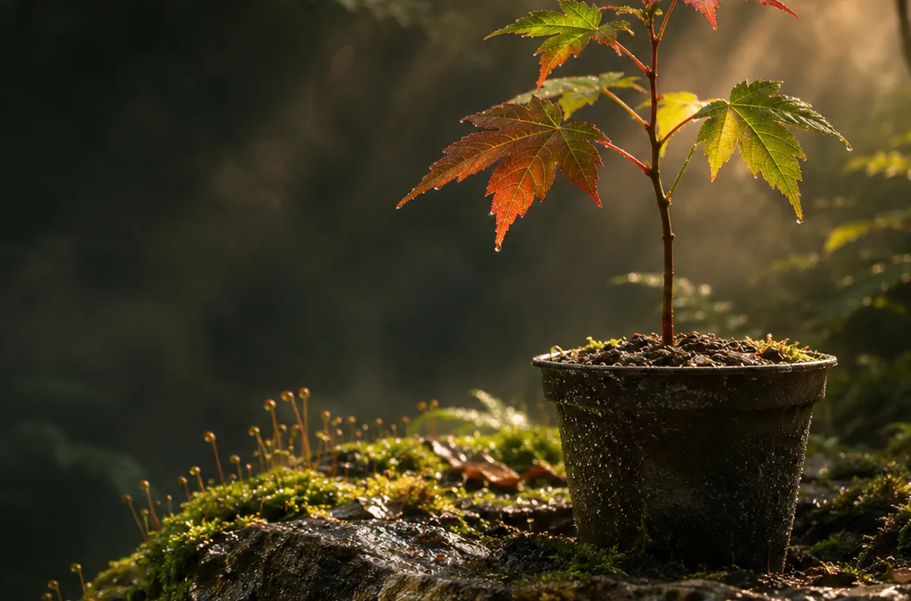

Illustrative botanical study · not Tree 01SPECIMEN 01 / 05
Tree 01
Acer rubrum · Red maple · Seed-grown · 2026
The owner's first bonsai experiment, with a proposed root-over-rock direction. Stone selection, repotting, and root placement remain future work.